Join Us
We are gathering designers, engineers, and storytellers who believe networked tools can serve communities rather than extract from them. Tell us what you are drawn to build, and how we might collaborate.
Send a note to hello@earendil.works with links or thoughts. We will reply as we convene the first circle of collaborators.
